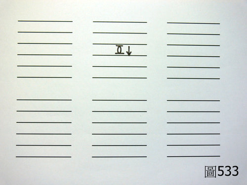
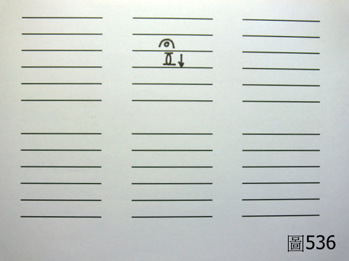

問答錄 235：瀕湖脈學主病詩說 －－滑脈為陽元氣衰的問題
作者：陳建元
陳老師您好：
瀕湖脈學中提到 : 「滑脈為陽元氣衰。」請問這句話該如何理解？還是棄之不論呢 ？問過很多老師，似乎都得不到答案。


答：
以脾氣虛為例的話，〈圖533〉是標準的脾氣虛的脈圖，也就是在脾脈的中位的地方（第3層的地方），出現一個較為無力的虛脈，這是脾氣虛的標準脈圖，但是氣虛之後，身體總是想去代償它，所以一些身體較為壯實的人，就會起一個「虛火」出來，而脈圖就會變成〈圖536〉這個樣子（在第2層處會出現一個滑脈），也就是我們用反按指法（第 26 條）去壓按的時候，臨床上對於氣虛的病人，〈圖533〉這種脈圖很常見，但〈圖536〉這種在第2層帶有一個滑脈的脈圖也很常見。
所以瀕湖脈學主病詩說 : 「滑脈為陽元氣衰 , 痰生百病食生災。」
翻譯：滑脉在浮位的時候，其意義代表的是氣虛的不足；滑脉在沉位（第4層）的時候，其意義代表的是各種的痰病（宿食亦是痰病的一種）。
但重點來了，當病人脾氣虛的時候，您用問診的方式去問他的時候，他會跟您回答說有食慾不振、消化不良、腹脹、大便偏軟這一系列的外候，於是您就會百分之百的肯定這是脾氣虛而給予黃耆、黨參、炙甘草這一類的補益藥物，並想當然而的認為一定會收到效果，但事實上，如果病人是〈圖533〉這種脈圖的時候會收到效果；而如果病人是〈圖536〉這種脈圖的時候，十之七八會補不進去而被彈回來，愈補火氣愈大而使醫者丈二金剛摸不著頭，有學過正確脈學的人會知道，〈圖536〉這種脈圖叫做「氣虛 + 虛火」，當給予黃耆、黨參、炙甘草 + 知母、白薇之類的藥物，也即要一面補益，一面退掉虛火，才能順利的補益進去而收到效果。
【引用請先來信告知徵求同意，若有涉及販售營利等商業行為，版權所有拷貝盜用必究。】
【藥王脈學講壇】http://blog.xuite.net/drjychen/twblog